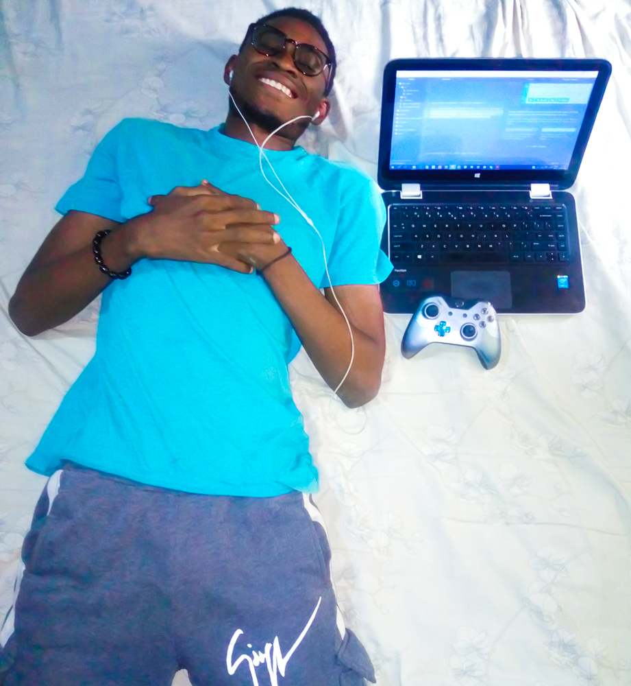

About me
My name is Amole Toluwanimi, a computer science student of federal university of agriculture Abeokuta, I was born in Ibadan, Oyo state Nigeria. I am passionate about software development, most especially front-end development, I love bringing designs to live with code and animations.
I am ambitious and goal driven. I constantly challenge myself to learn new things and set goals for myself daily to become a better person. This passion led me to teach myself how to code and web development, I’ve taken few courses online on web development basics and constantly looking for opportunities to improve my skills and move on to the next level.
Qualifications & Skills
I have vasertile skills. I can write code in HTML, CSS, CSS Preprocessor, bootstrap and Javascripts
I am final year student of Federal University of Agriculture, Abeokuta. I am studying Computer Science. I am a team player,